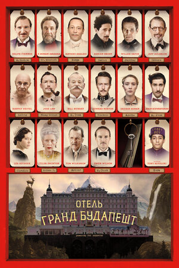

Чунгкингский экспресс
Chung Hing sam lam, 1994
Две автономные истории об одиночестве в мегаполисе. Стильная драмеди Вонг Кар-Вая, снятая в клиповой манере.
КиноПоиск 7,8/10
IMDb 8,1/10
Леди Бёрд
Lady Bird, 2017
Кристина не ладит с мамой, мечтает о большом городе, влюбляется, познает себя и мир. Нежная драма о взрослении.
КиноПоиск 7/10
IMDb 7,4/10
Отель «Гранд Будапешт»
The Grand Budapest Hotel, 2014

Старший консьерж втягивает юного подопечного в опасную историю. Любовь, убийство и погони.
КиноПоиск 7,9/10
IMDb 8,1/10